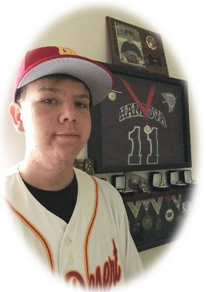

|  | Career Goal: My name is Kyle Handova, and I am a junior at Palm Desert High School. I have always has a love or an interest in some type of engineering or computer science. As a kid I remember I would draw little "blue prints" of a floating car using magnets. Anyway, I would love to work in some kind of engineering or Information Technology profession. Im working my hardest to acheive that by joining both the enginerring & computer science pathways. |
|---|---|
|
Strengths & Personal Qualities: One of my strongest strengths I would say would be, I am adaptable and quick. For example, I play baseball, and not only do I only have about a blink of an eye to know if I should swing or not, I also have to know where the ball is going to end up and make contact with the ball. Another Strength of mine would have to be, that I am flexible. We all know what is happening in the 2020-2021 school year, and it is important to be flexible and be able to change the way you do things and still be successful. Important Achievements: I have gotten a lot of achievements in my life and here some just a couple.
|